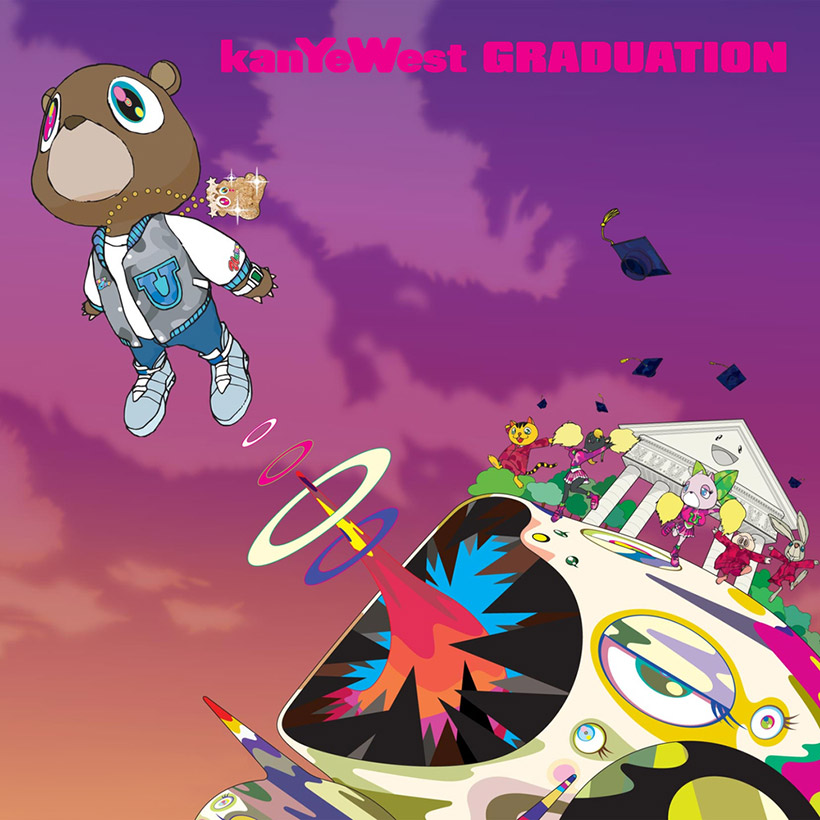

Graduation
Kanye West


 Graduation is the third studio album by American rapper Kanye West, released on September 11, 2007 by Roc-A-Fella Records. Recording sessions took place during 2005 to 2007 at Chung King Studios, Sony Music Studios, Chalice Recording Studios, and the Record Plant. It was primarily produced by West himself, with contributions from DJ Toomp, Mike Dean, Nottz, Brian "All Day" Miller, Eric Hudson, Warryn Campbell, Gee Roberson, Plain Pat, and Jon Brion. The album also features guest appearances from recording artists such as Dwele, T-Pain, Lil Wayne, DJ Premier, and Chris Martin of Coldplay. The album's cover art and its interior artwork were designed by Japanese contemporary artist Takashi Murakami, who
Graduation is the third studio album by American rapper Kanye West, released on September 11, 2007 by Roc-A-Fella Records. Recording sessions took place during 2005 to 2007 at Chung King Studios, Sony Music Studios, Chalice Recording Studios, and the Record Plant. It was primarily produced by West himself, with contributions from DJ Toomp, Mike Dean, Nottz, Brian "All Day" Miller, Eric Hudson, Warryn Campbell, Gee Roberson, Plain Pat, and Jon Brion. The album also features guest appearances from recording artists such as Dwele, T-Pain, Lil Wayne, DJ Premier, and Chris Martin of Coldplay. The album's cover art and its interior artwork were designed by Japanese contemporary artist Takashi Murakami, who
- Good Morning
- Champion
- Stronger
- I wonder
- Good Life
- can't tell me nothing
- barry bonds
- drunk and hot girls
- flashing lights
- everything i am
- the glory
- homecoming
- big brother